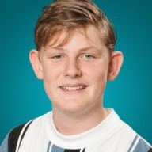

Ik ben 13 jaar en zit op het Martinuscollege in klas G2A. Ik houd ervan om dingen te onderzoeken, nieuwe ideeën uit te werken en zelf projecten te starten.

Een korte indruk van wie ik ben en waar ik mij mee bezig houd.
Mijn naam is Flint Bruijn. Ik ben geboren op 21 juni 2013 in Hoorn en woon in Enkhuizen. Ik zit op het Martinuscollege en volg daar gymnasium.
Mijn huidige school en opleiding.
Gymnasium · klas G2A
Ervaring die ik buiten het gewone schoolwerk heb opgedaan.
Maatschappelijke stage van 25 uur bij de griffie in Hoogkarspel, binnen West-Friesland.
Ik maak en verkoop mijn eigen pindakaas. Met mijn eigen bedrijf houd ik mij bezig met het maken van producten en het verkopen ervan.
Al 7 jaar lang trotse leerling van Theaterschool de Cast in Enkhuizen!
Talen die ik beheers en talen die ik aan het leren ben.
De dingen waar ik uit mezelf tijd in steek.
Een van mijn hobby's is onderzoek doen. Ik vind het interessant om dingen uit te zoeken en te ontdekken hoe iets werkt. Daarnaast maak en verkoop ik mijn eigen pindakaas. Dat doe ik onder mijn eigen bedrijf Bruijn Pindakaas.
Bekijk Bruijn-Pindakaas →Dingen waar ik ervaring mee heb.
Via deze adressen ben ik bereikbaar.